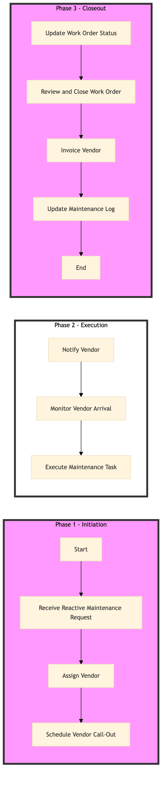

| Role | Steps |
|---|---|
| Facilities & Engineering Manager | 1.1 1.2 1.3 2.1 2.2 3.1 3.2 |
| Vendor | 2.3 |
| Finance Manager | 3.3 |
| Step | Name | Role | System | Input | Output | KPI | Dec? | Exc? | Pain Point / Risk |
|---|---|---|---|---|---|---|---|---|---|
| 1.1 | Receive Reactive Maintenance Request | Facilities & Engineering Manager | Oracle OPERA Cloud | Reactive maintenance request form | Work order created in Oracle OPERA Cloud | Less than 5 minutes to create work order | N | Y | Delays in creating work orders due to system issues |
| 1.2 | Assign Vendor | Facilities & Engineering Manager | Oracle OPERA Cloud, Birchstreet Procurement | Work order details | Vendor assigned to work order | Less than 10 minutes to assign vendor | Y | N | Difficulty in finding available vendors |
| 1.3 | Schedule Vendor Call-Out | Facilities & Engineering Manager | Oracle OPERA Cloud, Book4Time | Vendor details and work order schedule | Scheduled call-out in Oracle OPERA Cloud and Book4Time | Less than 15 minutes to schedule call-out | N | Y | Conflicts in vendor availability |
| 2.1 | Notify Vendor | Facilities & Engineering Manager | Oracle OPERA Cloud, Book4Time | Scheduled call-out details | Vendor notification sent via email or SMS | Less than 2 minutes to send notification | N | Y | Failed notifications due to vendor contact issues |
| 2.2 | Monitor Vendor Arrival | Facilities & Engineering Manager | Oracle OPERA Cloud, Book4Time | Scheduled call-out details | Vendor arrival status updated in Oracle OPERA Cloud | Less than 5 minutes to update status | Y | N | Delays in vendor arrival |
| 2.3 | Execute Maintenance Task | Vendor | Oracle OPERA Cloud, IBM Maximo | Work order details and materials | Maintenance task completed and documented in IBM Maximo | Less than 30 minutes to complete task | N | Y | Vendor delays or issues during execution |
| 3.1 | Update Work Order Status | Facilities & Engineering Manager | Oracle OPERA Cloud, IBM Maximo | Task completion details | Work order status updated in Oracle OPERA Cloud and IBM Maximo | Less than 5 minutes to update status | N | Y | System errors during status update |
| 3.2 | Review and Close Work Order | Facilities & Engineering Manager | Oracle OPERA Cloud, IBM Maximo | Final inspection report | Work order closed in Oracle OPERA Cloud and IBM Maximo | Less than 10 minutes to close work order | Y | N | Incomplete or inaccurate reports |
| 3.3 | Invoice Vendor | Finance Manager | Oracle OPERA Cloud, Birchstreet Procurement | Work order details and vendor invoice | Vendor invoiced and payment processed | Less than 15 minutes to process invoice | N | Y | Payment delays or errors |
| 3.4 | Update Maintenance Log | Facilities & Engineering Manager | Oracle OPERA Cloud, IBM Maximo | Final inspection report and work order details | Maintenance log updated in Oracle OPERA Cloud and IBM Maximo | Less than 5 minutes to update log | N | Y | Log entry errors or omissions |
This process outlines how to manage contractor and vendor call-outs at a Marriott full-service hotel using Oracle OPERA Cloud PMS and other relevant systems.